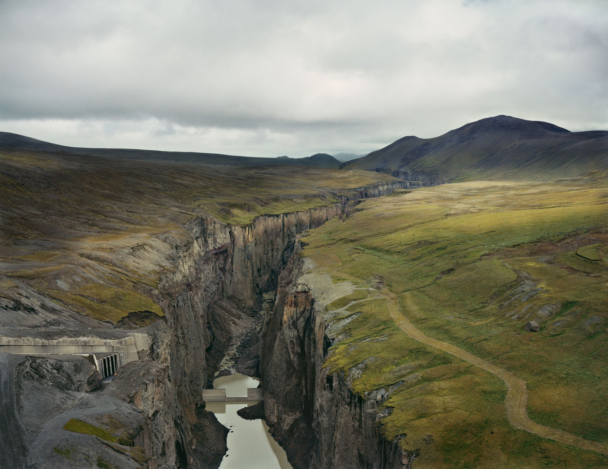

Helene Schmitz
Thinking Like a Mountain
December 14 - March 15, 2020
Schmitz’s latest photographic investigations explore humanity’s impact on the environment.
Her exhibition at Fotografiska New York will feature a selection of work from her series Thinking Like a Mountain (2018) and Kudzu Project (2013).
Earlier projects have focused on the aggressive and sometimes fragile relationship between nature and human beings, one that is spiraling out of control.
Kudzu Project shows the ongoing destruction that began after a climbing vine (Pueraria lobata) was brought overseas from its native home in Japan.
Once planted in the United States, the eponymous plant became an invasive species with dire consequences for industrial and ecological infrastructures in the American South.
Thinking Like a Mountain sheds light on the relationship between the ownership and exploitation of natural resources in Sweden and Iceland.